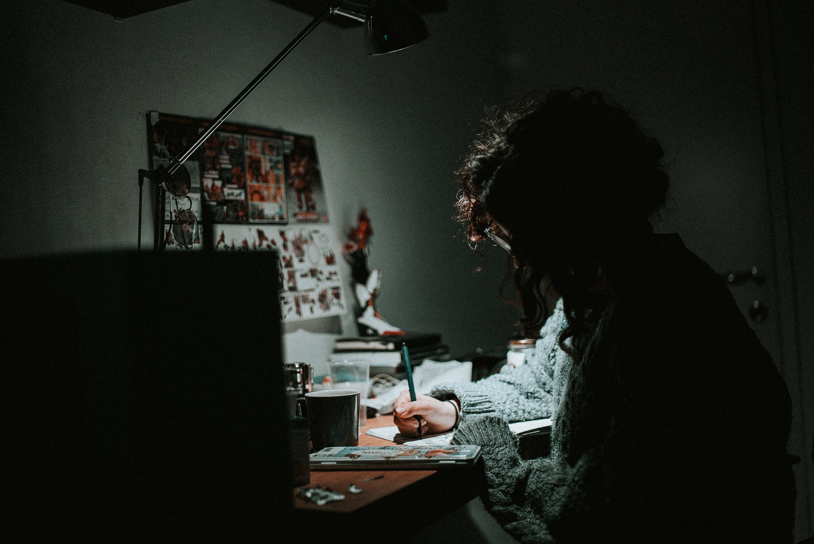

Purpose
The purpose of my PWP is to create a website that fellow artists can access in order to learn about art basics, the techniques I use in my own digital art, and find other tips to help them begin drawing digitally.
Audience
My intended audience consists of artists that use the Internet to learn about digital art (and sometimes drawing in general) and that are looking to either begin drawing digitally or to reinforce their basics. I anticipate that my audience will consist of people that are looking to draw in a style similar to my own- meaning they enjoy my style of anatomy and coloring enough to want to learn how to incorporate parts of my style into their own, and who perhaps feel like their art is not where they would like it to be. They will also likely be interested in drawing content similar to my own- real and fantasy animals. My website will probably not be helpful to artists more advanced or in different fields than I am, or for people that want to learn how to draw or paint traditionally.
I believe that my audience will benefit the most from an organized, clear website layout that emphasizes quality of content as opposed to unique modules or layout.
My website will be designed to give simple, advice on the art basics that I feel comfortable demonstrating, and a walkthrough of my current art process.
Goal
The main goal of this project is to support my peers in the art community by teaching them how to begin and improve their digital art, with a secondary goal of promoting my work in order to gain more followers and clientele for my commissioned works.
Persona
Name:
Mary Esso
Age:
23
Gender
Female
Occupation:
Part-time student and part-time cashier.
Technology
HP Pavillion running Mozilla Firefox 77.01 | Apple iPad Pro 12.9" running iPad OS | Wacom Intuos Tablet
Tech Literacy Level:
Proficient.
Mary knows how to navigate the web to search for art and post her art online, and knows enough to be slightly familiar with a different digital art program or two. She also knows how to research learning materials online but feels frustrated with how many different resources there are, and that many don't exemplify the style she wants to build. She has a strong general working knowledge that allows her to feel confident attempting to learn digital art.
Does she love or hate it?
She enjoys her technology and how useful it can be but due to her array of devices, Mary needs a website that is accessible on all her devices. She doesn't want to feel like she can only access her reference materials on one specific device.
Challenges:
Mary feels confident in her passion for art and its ability to motivate her learning, and while she is inspired by many digital artists, she feels like she isn't experienced enough to learn what an artist's techniques are just by looking at reference images or purely through trial and error. Mary feels like she spends a lot of time drawing but can't get her art to where she wants it to be stylistically.
She likes being walked through the basics because she knows how important they are, and where to find reliable resources to help expand her personal style.
Since Mary works and goes to school, she doesn't feel like she has enough time to efficiently disseminate information from lengthy books or articles, and retains more information when she sees it laid out visually and can see the results of the steps that she is learning from.